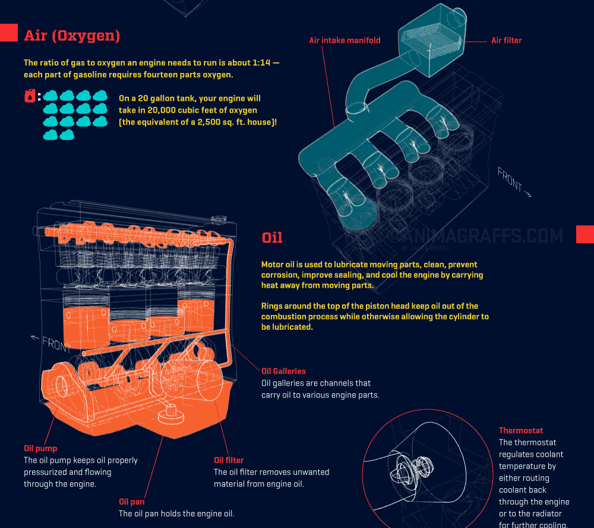
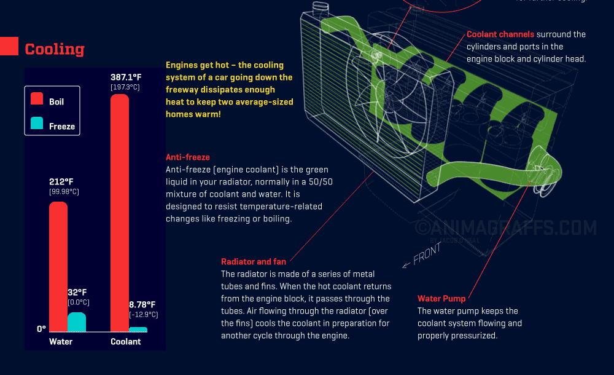
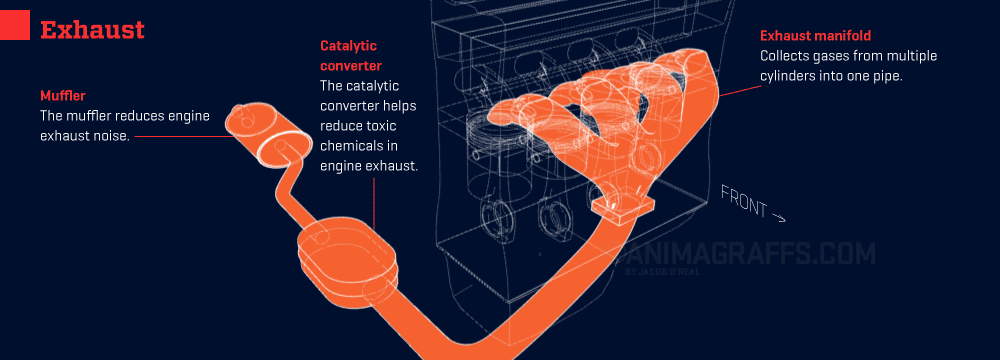

How do cars work?
Welcome
 Do you know only slightly more about cars than Mr. Burns here?
If you've ever looked under the hood of a car, it's a lot of caps and reservoirs for various fluids and electrical stuff. However, there are not many clues as to what actually makes the car go vroom vroom. You might wonder...
Do you know only slightly more about cars than Mr. Burns here?
If you've ever looked under the hood of a car, it's a lot of caps and reservoirs for various fluids and electrical stuff. However, there are not many clues as to what actually makes the car go vroom vroom. You might wonder...
- What's going on that actually gives the vehicle the power to move?
- Why have cars run on gasoline for so long?
- How does the engine start? What keeps it going?
- Why do I have to change my oil? What does it do?
- How do I keep my car from overheating?
- Is there anything important that I'm completely ignoring?
Let's get started with Fuel and Air!
Fuel and Air
So, how does the gasoline engine work? Before we start naming parts, we should understand that just like us, cars need fuel and air in order to generate the energy to move around, too.
So, let's dive in! Check out the video* titled "How the gasoline engine works."
After you've finished, read this excellent blog post which describes how the internal combustion engine works using things you already understand. In the post, Hoen Taylor describes the basic parts of the engine in terms of a tricycle wheel, a spray bottle, a syringe, and a bathroom sink. These simple elements can be used to describe the four stroke cycle of the internal combustion engine.
Video: How the Gasoline Engine Works
*(Please note that although this very old video explains the function of the carburetor, modern vehicles tend to use fuel injection systems. If you are curious about the difference, check out this article. However, don't worry about this for the purposes of this lesson!)
We can put this all together with Jacob O'Neil's animation of the four stroke cycle.
Spark
But how does the engine get going in the first place?
In the Fuel and Air section, you read a little bit about the spark plug and electric starter motor on Taylor Hoen's blog. This part of the lesson showed how gasoline burns best when mixed thoroughly with air. However, it needs a spark of electricity to do it! Watch the video, "Starting a Car - Explained," to understand just how that spark happens when you start your car.
For fun, check out a much faster explanation in this rap video here!
Video: Starting a Car - Explained
Although the battery gets the car started and runs other systems when the engine isn't running (like your radio), the alternator provides electricity while the engine is running. Read this article to learn more about how the alternator and battery work together!
Once again, we can check out Jacob O'Neil's animation of the electrical system to see all this in action.
Oil
If you've ever owned a car, you've had to get an oil change. Some mechanics are courteous enough to leave a sticker on your dashboard to remind you approximately when or at what mileage you should come back to change your oil. Why?
Well, did you know that each of the joints in the human body contains a lubricating fluid? This allows for ease of movement of the body. Engine oil serves a similar purpose.
Watch the video "How does car engine oil work?" to learn about what the oil does in the engine.
Video: How does car engine oil work?
To review this concept, we can use Jacob O'Neil's animation again. Please pay attention to the oil system in the lower half of this image. We already learned about precious air! 
Cooling
So far, you must have gathered that there's a lot of wear and tear generated by the many moving parts of car's engine. We have neglected to mention that the internal combustion engine generates a LOT of heat!
Watch the video, "Under the hood: The chemistry of cars" to learn about how the engine prevents overheating.
For a more detailed explanation of the cooling system, check out this article!
Video: The Chemistry of Cars
As usual, we can examine part of Jacob O'Neil's animation to visualize the cooling system. The bubble that is cut off in the top right of this image depicts the thermometer, which regulates coolant temperature by either routing coolant back through the engine or to the radiator for further cooling. 
Exhaust
If cars must inhale air like humans, so must they also exhale. By now, many of us have learned that burning fossil fuels is not ideal for the environment. So what exactly happens when gasoline is burned in the engine? We know that it generates a lot of heat and energy, but is there anything else?
Watch the video "How Car Exhaust System Works" to find out more!
Video: How Car Exhaust System Works
Let's visualize all this with Jacob O'Neil's animation!
Review
Let's review the entire Animagraff of the car engine so you can get a better idea of all the systems working together!

^Top
Next: Step Inside!
Step Inside
Imagine that you are a molecule of gasoline sitting in a car's gas tank waiting to power the car. Someone turns the ignition key, and it's your turn! Describe your journey. Where do you go? What do you see? What happens to you? What is your final destination?
how-cars-work-discussion